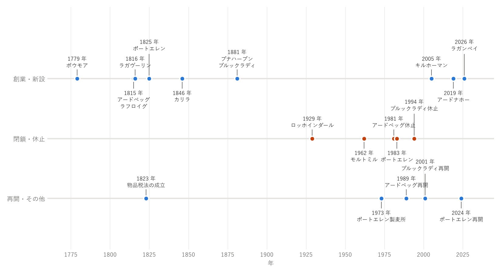

第 4 章 歴史
本章では、アイラ島のウイスキーの歴史を、蒸留が伝わったとされる中世から、新しい蒸留所が次々に生まれている現在まで順に説明する。主な出来事を図 5に示す。


図 5 アイラの蒸留所の歴史
蒸留の伝来
アイラ島は、中世にはスコットランド西部の島々を治めた「島々の領主（Lord of the Isles）」の本拠地であった。島の中央部にあるフィンラガンには、その拠点の跡が残っている。
蒸留の技術がいつアイラ島に伝わったかは、はっきりしていない。海を隔てて近いアイルランドから、医師の一族によって蒸留の技術が伝えられたという伝承がある。当時の蒸留酒は、飲み物というより薬として扱われていた。
密造の時代
18 世紀になると、蒸留酒造りは島の農家の副業として広まった。収穫した大麦で酒を造れば、運びやすく、売って現金に換えることもできたためである。
一方、スコットランドでは、1707 年のイングランドとの合同の後、麦芽や蒸留酒にかかる税が次第に重くなった。そのため、税を払わずに隠れて酒を造る密造が広く行われた。本土から離れ、入り組んだ海岸線を持つアイラ島は、密造に向いた土地であった。燃料のピートは島のどこにでもあり、麦芽をピートで乾燥させるのは自然なことであった。
この時代に、アイラ島の開発も進んだ。島の領主であったキャンベル家は、1768 年にボウモア村を計画的に建設した。1779 年には、この村でボウモア蒸留所が創業した。これはアイラ島で現存する最古の蒸留所であり、スコットランドでも古い蒸留所の 1 つである。
合法的な蒸留所の誕生
1823 年、蒸留所の免許料と税を引き下げる物品税法（Excise Act）が成立した。これにより、正規の免許を取って蒸留する方が得になり、密造は急速に減っていった。
19 世紀には、アイラ島で次のような蒸留所が創業した。
1815 年：アードベッグ、ラフロイグ
1816 年：ラガヴーリン
1825 年：ポートエレン
1846 年：カリラ
1881 年：ブナハーブン、ブルックラディ
このほかにも多くの小さな蒸留所が生まれたが、その多くは長続きしなかった。
ブレンデッドウイスキーの原酒として
19 世紀の半ばから、モルトウイスキーとグレーンウイスキーを混ぜたブレンデッドウイスキーが広まった。軽く飲みやすいブレンデッドウイスキーは、イングランドや海外で人気を集めた。
ブレンデッドウイスキーの香りに奥行きを与えるため、少量でも個性の強いアイラのモルトは重宝された。アイラ島の蒸留所の多くは、ブレンデッドウイスキーを造る会社に原酒を売ったり、その傘下に入ったりした。たとえば、ラガヴーリンは、ブレンデッドウイスキー「ホワイトホース」の主要な原酒として知られる。この頃には蒸気船が島と本土を結び、原酒を運びやすくなった。
19 世紀の終わりには、イギリスの蒸留所を巡った記者アルフレッド・バーナードが、アイラ島の蒸留所を詳しく記録している。
閉鎖と再編
20 世紀に入ると、アイラ島の蒸留所は厳しい時代を迎えた。2 度の世界大戦、アメリカの禁酒法（1920〜1933 年）、世界的な不況によって、ウイスキーの需要は大きく揺れ動いた。1929 年にはロッホインダール蒸留所が閉鎖された。ラガヴーリンの敷地内に造られたモルトミル蒸留所も、1962 年に閉鎖された。
第二次世界大戦の後、ブレンデッドウイスキーの需要は再び伸びた。1960〜70 年代には設備の拡張が進み、カリラは 1970 年代前半に大規模に建て替えられた。1973 年には、ポートエレン蒸留所の隣に大規模な製麦所が建てられた（第 6 章 製法の特徴）。
しかし 1980 年代に入ると、ウイスキーの需要が落ち込み、作りすぎた原酒が余る事態になった。この影響で、アードベッグは 1981 年に生産を休止し、ポートエレンは 1983 年に閉鎖された。ブルックラディも 1994 年に生産を休止した。
シングルモルトの時代
1980 年代の後半から、ブレンデッドウイスキーの原酒としてではなく、蒸留所ごとの個性を楽しむシングルモルトが注目されるようになった。1988 年には、大手企業がスコットランド各地の代表的なシングルモルトを集めたシリーズを発売し、ラガヴーリン 16 年もその 1 つに選ばれた。個性の強いアイラのシングルモルトは、熱心な愛好家を世界中で獲得していった。
アイラの蒸留所も、この流れの中で息を吹き返した。
アードベッグは 1989 年に生産を再開し、1997 年に新しい所有者のもとで本格的に復活した。
ブルックラディは、2001 年に新しい所有者のもとで生産を再開した。
新しい蒸留所の時代
21 世紀に入ると、アイラ島には新しい蒸留所が次々に生まれている。
2005 年：キルホーマンが創業した。アイラ島で新しい蒸留所が造られたのは、1881 年以来およそ 120 年ぶりであった。
2019 年：アードナホーが開業した（蒸留の開始は 2018 年）。
2024 年：1983 年に閉鎖されたポートエレンが、40 年余りを経て生産を再開した。
2026 年：ラガンベイが蒸留を開始し、島で 11 番目の稼働中の蒸留所となった。
このほかにも、新しい蒸留所の計画がある（第 7 章 蒸留所ガイド）。また、1986 年に始まった島の音楽と文化の祭りは、今では各蒸留所が参加する「フェシュ・イーラ」として、世界中から愛好家を集めている（第 14 章 アイラ島を訪ねる（コラム））。
アイラ島の蒸留所の歴史は、密造の島から、ブレンデッドウイスキーの原酒の供給地を経て、個性で世界の愛好家を引き付ける産地へと変わってきた歴史である。